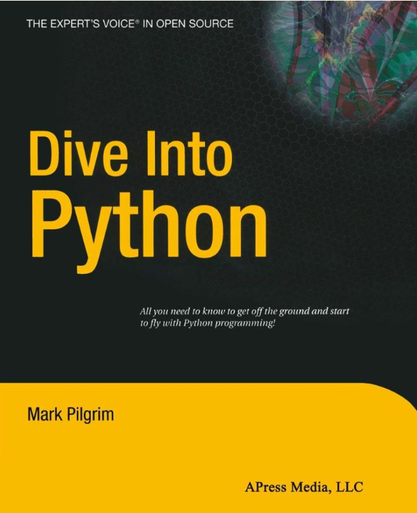

Gjatë muajve të fundit kam kërkuar për materialet më të mira për mësimin e programimit në Python.
Disa prej tyre janë pa pagese, prandaj në këtë artikull po ndaj me ju tutoriale dhe libra falas per
Python, të cilat më duken shumë të qarta në koncepte.
Nëse kam harruar ndonjë link, mos hezitoni të më shkruani email dhe t’a shtoj tek kjo listë.
Website me informacione në Python.
Kur dua të importoj një librari të re në kod, shpesh i referohem dokumentacionit zyrtar. Edhe në
këtë rast, i pari website që ju rekomandoj është dokumentacioni i Python, të cilin do e gjeni në
linkun https://docs.python.org/3/.
Janë dy website interesante të quajtura Hitchhiker, por që, me sa duket, nuk kanë lidhje me
njëri-tjetrin. The Hitchhiker’s Guide to Python i vjen në ndihmë edhe fillestarëve edhe ekspertëve
në Python, duke përmbledhur një guidë praktike në lidhje me instalimin, konfigurimin dhe programimin
në Python. The Hitchhiker’s Guide to Packaging cila ju ndihmon si të instaloni një paketë, gjithashtu
si të krijoni ju paketat tuaja me aplikacione në Python.
DataCamp ka shumë materiale falas në lidhje me përdorimin e Python për Data Science, pra përpunim të
dhënash shkencore. Ky website ka gjithashtu një blog shumë interesant.
Nëse ke interes për informacione në formatin e blog-ut, website Planet Python është fiks për ty.
Planet Python është një RSS për dhjetra bloge në lidhje me programimin në Python. Ju mund të shikoni
links në secilin blog në menunë majtas tek Planet Python.
Libra falas për Python

Mark Pilgrim është autori i Dive Into Python, një libër i cili ka mbi dhjetë vite në treg, dhe ju
ofrohet pa pagesë, fillimisht për versionin e vjetër në Python 2, si dhe në versionin më të fundit
Python 3.